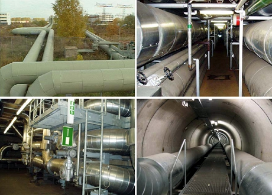

> Zum Inhalt
DGUV Regel 103-002
Fernwärmeverteilungsanlagen

Ausgabe Februar 2011
Herausgeber:
Deutsche Gesetzliche Unfallversicherung e.V. (DGUV)
Erarbeitet und beschlossen vom Fachausschuss "Gas und Wasser" der Deutschen Gesetzlichen Unfallversicherung (DGUV).
An der Erarbeitung und Überarbeitung dieser Regel haben überwiegend folgende Arbeitskreismitglieder mitgewirkt:
Dr. Werner Steinbrink BG ETEM B-EW (Obmann)
Heinz Hermann Berndgen BG ETEM
Dr. Heiko von Brunn AGFW | Der Energieeffizienzverband für Wärme, Kälte und KWK e.V.
Wolfgang Fellmann Vattenfall Europe Wärme AG
Jens Hörmann Vattenfall Europe Wärme AG
Bei der Erarbeitung wirkte noch mit:
Ole Nissen Stadtwerke Kiel AG